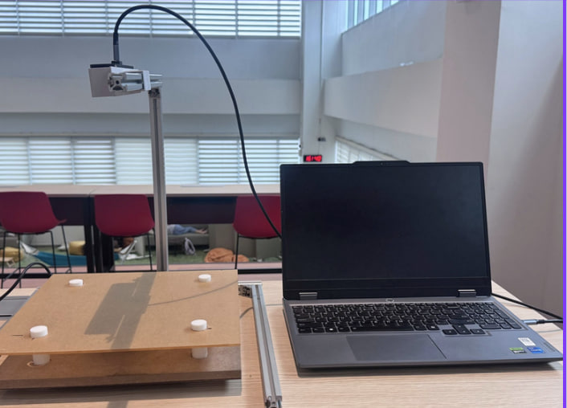
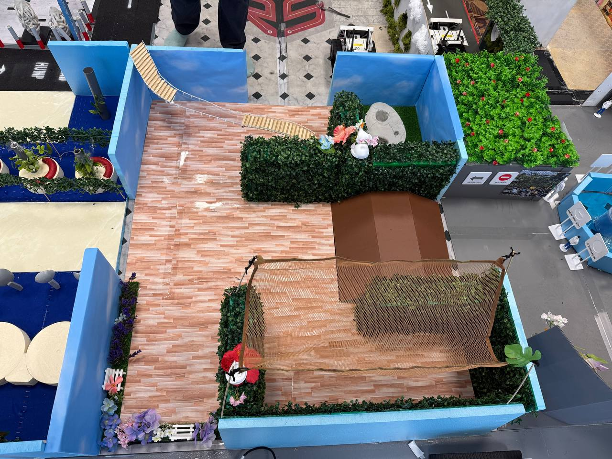

CEVA — Intelligent Pallet Optimisation System
An autonomous warehouse measurement system integrating load cell sensing and stereo camera vision to capture weight and 3D dimensions of palletised cargo at a fixed checkpoint.
Robotics Systems · SIT Singapore
Building intelligent systems at the intersection of hardware, software, and automation.

About Me
I'm Jin Ziyu, a Robotics Systems undergraduate at the Singapore Institute of Technology with a strong foundation in electronics, automation, and robotics. My journey combines academic learning with practical industry experience in quality assurance and supply chain operations.
During my time as an Assistant QA Engineer at Kinergy Corporation, I conducted equipment inspections using UV light and feeler gauges, while collaborating with cross-functional teams to enhance product quality. My internship at Wizlogix gave me insight into supply chain processes, inventory control, and procurement systems like SAP.
I'm passionate about solving technical challenges, optimising systems, and applying robotics solutions in real-world environments — constantly seeking opportunities to innovate in robotics, automation, and quality engineering.
Technical Skills
ROS 1 & ROS 2, node architecture, topic/service communication, SLAM, robot system integration
C, C++, Python — embedded systems, data processing, and automation scripting
Stereo depth estimation, camera calibration, and dimension detection using ZED2i
Circuit design, load cells, HX711, Arduino, feeler gauges, UV inspection tools
TCP bridges, ROS 2 middleware, multi-node architectures, hardware-software co-design
QA inspection, SAP inventory management, process improvement, cross-functional collaboration
Work Experience
Assistant Quality Assurance Engineer
Supply Chain Intern
Projects

An autonomous warehouse measurement system integrating load cell sensing and stereo camera vision to capture weight and 3D dimensions of palletised cargo at a fixed checkpoint.

A student-facing web dashboard for Singapore Institute of Technology — featuring timetable integration, drag-and-drop panels, dark mode, and per-student data namespacing. Built as a practical tool for daily campus life.
Education
BEng (Hons) Robotics Systems
Specialist Diploma in Robotics and Automation
Diploma in Electronics
Get In Touch
I'm open to internship opportunities, research collaborations, or just a conversation about robotics and automation.